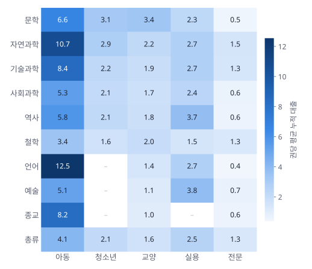
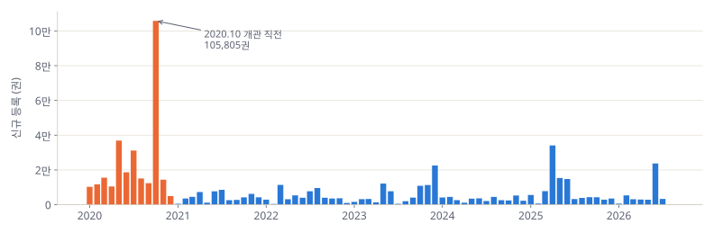

데이터분석 중간대체 과제 · 연구 주제 및 분석 계획
장서는 많지만,
읽히는 책은 적다
부산도서관 장서–대출 데이터 기반 도서관 운영 제안
홍현아 · 2026년 10월
CONTENTS
발표 구성
왜 이 주제인가
문제의식 · 연구 주제 · 연구 질문
03 – 06데이터와 예비 분석
데이터 소개 · 주의점 · 7가지 예비 발견
07 – 16분석 계획
프레임워크 · 지표 · 방법 · 산출물 · 일정
17 – 25Ⅰ · 문제의식
부산도서관 장서 659,791권 중
0권
은 한 번도 대출되지 않았습니다.
개관(2020년 11월) 이후 누적 기준 · 2026년 9월 데이터
한 칸 = 장서 1% · ■ 대출 0회 68칸 · ■ 1회 이상 32칸
Ⅰ · 연구 배경
도서관의 자원은 한정되어 있다
예산
매년 살 수 있는 책의 수는 정해져 있다.
무엇을 먼저 살 것인가?
서가 공간
읽히지 않는 책도 서가를 차지한다.
무엇을 정리·이관할 것인가?
변하는 수요
인기 분야·신간은 빠르게 바뀐다.
무엇을 늘릴 것인가?
→ 감(感)이 아니라 장서–대출 데이터로 이 질문들에 답할 수 있을까?
Ⅰ · 연구 주제
장서–대출 데이터 기반 도서관 운영 제안
어떤 책이 얼마나 빌려지는지 분석해, 도서관이 바로 실행할 수 있는 4가지 운영 제안을 도출한다.
구입 우선순위
수요 대비 장서가 부족한 분야·대상을 찾아 구입 비중 조정
→ 구입 우선순위표
복본 최적화
대기 수요가 큰 책은 늘리고, 과잉 복본은 줄이기
→ 복본 추천 목록
재배치 · 정리
장기 미대출 장서를 큐레이션으로 재노출하거나 보존서고로 이관
→ 재배치·정리 후보 목록
목록 정비
분류번호·이용대상 기호 등 누락된 서지 정보 보완
→ 목록 정비 목록
Ⅰ · 연구 질문
네 가지 질문으로 접근한다
이용 집중도
장서는 얼마나 고르게 이용되고 있는가?
수요–공급 불균형
어떤 주제·이용대상이 장서 규모에 비해 많이 / 적게 이용되는가?
시간 효과
출간 후 입수 시점(신간성)과 등록 시기는 이용에 어떤 영향을 주는가?
운영 효율
복본과 장기 미대출 장서는 어떻게 관리해야 하는가?
Ⅱ · 데이터
부산도서관 장서 대출목록 (2026년 9월)
장서 (1행 = 1권)
서로 다른 책
누적 대출
등록일자 범위
서지 정보
분류 정보
이용 정보
KDC(한국십진분류): 0 총류 · 1 철학 · 2 종교 · 3 사회과학 · 4 자연과학 · 5 기술과학 · 6 예술 · 7 언어 · 8 문학 · 9 역사
부가기호 첫 자리: 0 교양 · 1 실용 · 4 청소년 · 7 아동 · 9 전문
Ⅱ · 데이터 주의점
분석 전에 바로잡아야 할 세 가지
대출건수는 '누적값'
2020년에 들어온 책이 유리하다 → 보유기간으로 나눠 보정
전집은 ISBN을 공유
72권짜리 전집이 '같은 책 72권'으로 집계되는 문제
분류 정보 결측
2021년 이후 등록분 일부에 분류번호·이용대상이 비어 있음
Ⅱ · 예비 분석 ① 이용 집중도 (RQ1)
상위 10%의 책이 대출의 75%를 차지한다
지니계수 (0 = 완전 균등, 1 = 한 권에 몰림)
상위 10% 장서의 대출 점유율
상위 20% 장서의 대출 점유율
로렌츠 곡선: 대출이 적은 책부터 차례로 쌓았을 때 대출이 얼마나 누적되는지. 대각선에서 멀수록 쏠림이 크다.
Ⅱ · 예비 분석 ② 대출 구간 (RQ1)
3.9%의 책이 전체 대출의 절반을 만든다
장서의 68% · 대출 기여 0%
장서의 3.9% · 대출의 48%
→ 소수의 '인기 장서'가 이용을 견인하고, 다수는 서가에 머문다. 어떤 책이 어느 쪽에 속하는지가 분석의 핵심.
Ⅱ · 예비 분석 ③ 주제별 수요 (RQ2)
문학·자연과학은 부족하고, 종교·예술은 남는다
1보다 크면 장서 규모보다 많이 빌려지는 분야(공급 부족)
1보다 작으면 장서 규모보다 적게 빌려지는 분야(공급 과잉)
사회과학은 장서의 18%를 차지하지만 대출은 11%.
문학은 장서 29% → 대출 36%.
※ 미분류 = 분류번호가 입력되지 않은 2021년 이후 장서 (인기 아동서 다수 포함)
Ⅱ · 예비 분석 ④ 수요–공급 지도 (RQ2)
대각선 위는 '부족', 아래는 '과잉'
x축: 장서에서 차지하는 비중 · y축: 대출에서 차지하는 비중
문학 · 자연과학 · 총류 — 장서보다 많이 빌려짐
사회과학 · 역사 · 철학 · 예술 · 종교
본 분석에서는 대분류(11개)를 중분류(약 100개) × 이용대상 단위로 쪼개 같은 지도를 그린다.
Ⅱ · 예비 분석 ⑤ 이용대상 (RQ2)
대출을 이끄는 것은 아동 도서

아동 도서
장서 10.6% → 대출 0
전문 도서
장서 10.9% → 대출 0
아동용 언어(12.5회)·자연과학(10.7회) 책의 권당 대출이 가장 높다. 『수학도둑』, 『마법천자문』, 『흔한남매』 같은 학습만화 시리즈가 인기 상위권.
전문 도서는 84%가 한 번도 대출되지 않았다.
Ⅱ · 예비 분석 ⑥ 신간성 (RQ3)
출간 당해에 들어온 책은 25배 더 빌려진다
출간 당해 입수 책의 월평균 대출
출간 11년 이상 지나 입수한 책 — 95%가 대출 0회
'언제 나온 책을 언제 들여오느냐'가 이용률을 크게 좌우한다 → 구입 시점 가이드의 근거.
6개월 이상 보유한 장서 기준 · 월평균 대출 = 누적 대출 ÷ 보유 개월
Ⅱ · 예비 분석 ⑦ 등록 시기와 장기 미대출 (RQ3·RQ4)
개관 때 한꺼번에 들어온 책들이 서가에 남아 있다

2020년 일괄 등록 (전체의 44%)
장기 미대출 — 2년 이상 보유 중 대출 0회 (64%)
장기 미대출 중 2009년 이전 출간 (대출된 책은 6%)
Ⅱ · 예비 분석 ⑧ 복본 효율 (RQ4)
같은 책은 2~3권까지가 효율적이다
권당 대출은 1권일 때와 비슷하게 유지되면서, 책 한 종의 총 대출은 2~3배로 증가
권당 대출 급락 · 77~79%는 한 권도 빌려지지 않음 (대부분 2020년 일괄 등록)
→ 반대로 1권뿐인데 매달 1회 이상 빌려지는 책이 4,253종: 복본 추천 후보
Ⅲ · 분석 프레임워크
수요–공급 매트릭스로 '할 일'을 정한다
분석 단위: 주제(KDC 중분류) × 이용대상 세그먼트
x축 = 공급(장서 비중) · y축 = 수요(수요지수, 월평균 대출)
- 확충 수요↑ 공급↓ — 구입·복본 확대
- 유지 수요↑ 공급↑ — 현재 수준 유지, 신간 교체
- 재노출 수요↓ 공급↓ — 큐레이션·전시로 발견성 높이기
- 정리 수요↓ 공급↑ — 구입 축소, 보존서고 이관·제적 검토
Ⅲ · 핵심 지표
다섯 가지 지표로 측정한다
수요지수
분야·대상별 공급 부족/과잉
월평균 대출
보유기간을 보정한 이용 강도
미대출률
서가에 머무는 장서의 비율
장기 미대출
재노출·이관·제적 검토 대상
대기 압력
복본 추가 후보
Ⅲ · 분석 절차
데이터에서 제안까지 6단계
Ⅲ · 분석 방법
질문별 분석 방법과 산출물
| 질문 | 분석 방법 | 시각화 | 산출물 |
|---|---|---|---|
| RQ1이용 집중도 | 로렌츠 곡선 · 지니계수 · 대출 구간 분포 | 로렌츠 곡선, 히스토그램 | 집중도 진단 |
| RQ2수요–공급 | 세그먼트(중분류×이용대상)별 수요지수 · 미대출률 비교 | 발산 막대, 히트맵, 수요–공급 산점도 | 구입 우선순위표 |
| RQ3시간 효과 | 신간성·등록 코호트 비교, 회귀 모형으로 주제·대상 효과 통제 | 막대, 코호트 곡선 | 구입 시점 가이드 |
| RQ4운영 효율 | 복본 수별 효율 · 대기 압력 · 장기 미대출 프로파일링 | 막대, 후보 목록 | 복본 추천 · 재배치/정리 후보 |
| 종합요인 분석 | 다중회귀 / 트리 모형으로 대출에 영향을 주는 요인의 상대적 크기 추정 | 계수·중요도 막대 | 제안의 근거 강화 |
도구: Python(pandas · statsmodels · scikit-learn) · matplotlib · Jupyter Notebook
Ⅲ · 기대 산출물
기말에 내놓을 운영 제안의 모습
01구입 우선순위표
| 세그먼트 | 수요지수 | 제안 |
|---|---|---|
| 아동 · 자연과학 | ↑↑ | 확충 |
| 교양 · 일본문학 | ↑ | 확충 |
| 전문 · 행정학 | ↓↓ | 축소 |
예시 형식 · 값은 본 분석에서 산출
02복본 추천 목록
0종
1권뿐인데 매달 1회 이상 대출되는 책
예: 『흔한남매 흔한게임』, 『who? special 페이커』, 『웃소 7』
03재배치 · 정리 후보
32.7만→ 큐레이션
재노출→ 그래도 0회면
이관·제적
출간 연도·주제·복본 여부로 우선순위 부여
04목록 정비 목록
분류번호 누락 8.4만권 · 이용대상 기호 누락 21.7만권
인기 도서부터 우선 보완하면 검색·통계 품질이 함께 개선
Ⅲ · 번외 탐색 주제
덤으로 들여다볼 흥미로운 질문들
제목에 이 단어가 있으면 — 평균 대비 월평균 대출 (배)
코로나 책은 지금 평균의 0.7배. 챗GPT 책은 2023년 출간분이 권당 9.1회 → 2025년 출간분 4.7회
흔한남매 1~3권 권당 약 110회 → 7권 45회. 수학도둑은 10권까지 50회대 유지
『어린 왕자』 84개 출판사 판본 — 판본별 대출 0회 ~ 20회+
Ⅲ · 일정
중간 → 기말 로드맵
Ⅲ · 한계와 보완
알고 시작하는 한계
SUMMARY
데이터로 서가를 다시 짠다
장서의 68%가 한 번도 대출되지 않음
수요지수 · 월평균 대출 · 장기 미대출로 세그먼트 진단
구입 우선순위 · 복본 최적화 · 재배치/정리 · 목록 정비
감사합니다 · Q&A
분석 노트북·코드: github.com/hhonge1234-create/busan-library-analysis